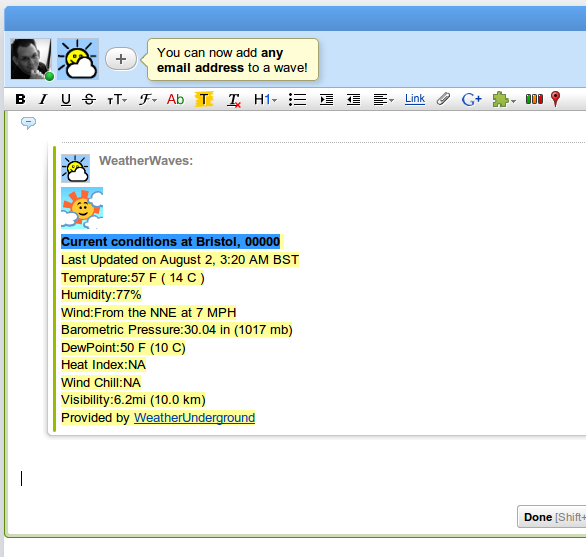
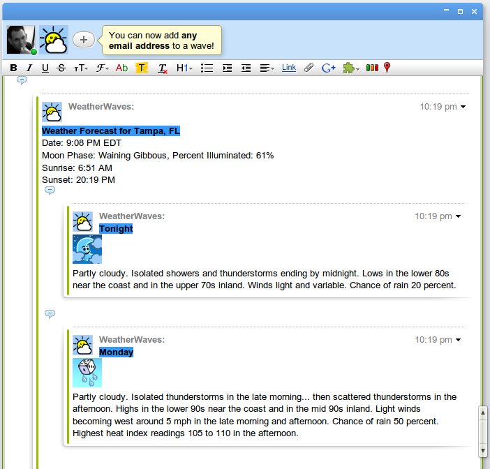

WeatherWaves is a GoogleWave that you can add to your wave and anywhere you type the WW request code in your Wave it will promptly replace the request with the Weather brought to you by the Weather Underground.
Now to get some weather information simply edit your wave or create a new Blip in the wave and type in the following weather request code:
`@WW[your_zip_code]`
A second or so after you finish typing the request the bot will jump into action and replace the request with your weather. Easy!
Here's what you'll get:

Weatherwaves can do more then just give you the current weather! In addition to inserting your current conditions into a wave it can also retrieve Weather Alerts for a given location (hopefully there aren't any) or it will retrieve the Forecast for your location.
The Weatherwaves request is almost identical to the as the current conditions request except you want to specify that you would like [a]lerts info or the [f]orecast. The following examples demonstrate how this is done.
`@WW[your_zip_code|a]`
`@WW[your_zip_code|f]`
Simply adding a |a or |f after your zip code will do the trick! Also I should mention that your not stuck with just requesting a zip code, you can specify your city,state as well, such as '@WW[Las Vegas, NV]'
Have fun!
Forecast Example:
